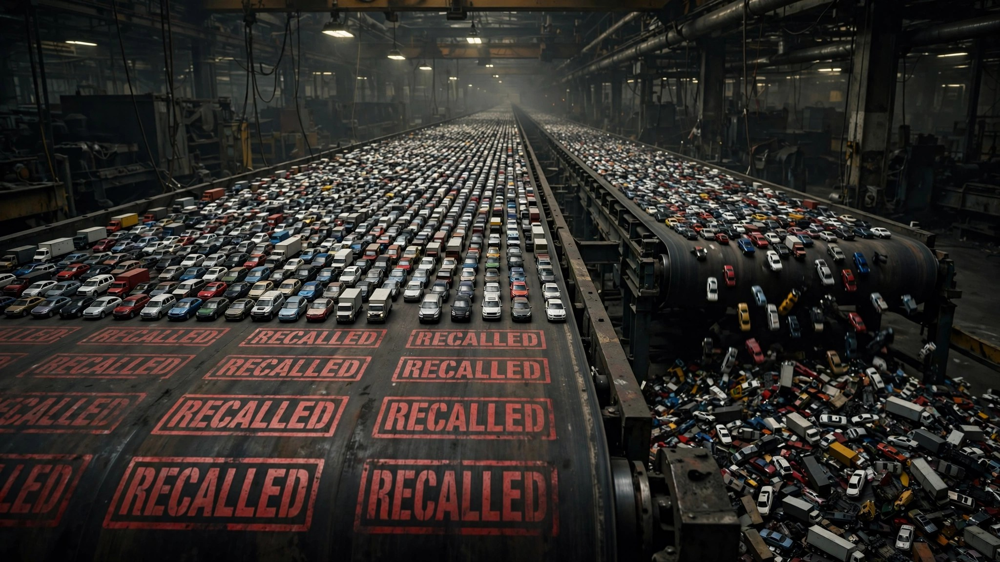

NHTSA Recalled 12.6 Million Vehicles Last Quarter. The Quarter Before, It Was 9.5 Million.

I ran the numbers, then ran them again, and they refused to improve. NHTSA’s Office of Defects Investigation just posted its quarterly metrics for fiscal year 2026, and buried inside a table that exactly zero news outlets bothered to analyze sits a trajectory that should concern anyone who equates “recall” with “safety.” During the second quarter of fiscal year 2026, the agency processed 226 recalls covering 12,625,383 vehicles.[1] One quarter earlier, that population was 9.5 million, preceded by 9.4 million the quarter before, and 8.1 million the quarter before that, a staircase nobody in Washington seems interested in climbing.
Stack all four quarters together and you land on a number that should make actuaries involuntarily reach for their inhalers: 39.6 million vehicles recalled across twelve months, against a registered fleet of approximately 283 million. At that pace the recall pipeline is processing one in every seven vehicles on American roads annually, which means that if your neighborhood has seven driveways, one of those cars statistically carries a known, manufacturer-acknowledged defect from the past year alone, sitting there under the same sun as the rest of them, indistinguishable from the outside.
More revealing than the raw population is the average size of each campaign. In FY25 Q3, a typical recall covered 30,446 vehicles, the kind of number suggesting a supplier shipped a contaminated batch of fasteners to one assembly plant during a specific two-week production run. By FY26 Q2, that average had ballooned to 55,865 vehicles per recall, an 83% increase across four quarters, and it signals something structural rather than incidental: the defects surfacing now are not isolated manufacturing hiccups confined to a single plant on a single Tuesday afternoon but platform-level design flaws baked into vehicles sharing architectures across multiple models and model years, the kind of problem that radiates outward from a single engineering decision ratified in a conference room years before the first owner turned a key.
Ford’s head of quality, Josh Levine, told USA Today last week that Ford has filed 60 recalls in 2026, leading the industry by a margin of 2.5 to 1 over second-place Chrysler.[2] He offered a defense that sounds reasonable until you reach for a calculator: “Our newest 2026 and 2027 models make up just 3.3% of this year’s recall volume.” What he left unspoken is that 3.3% is precisely what you would expect from vehicles that have accumulated only six months of road exposure, because defects emerge on a timeline that correlates with mileage, wear cycles, and seasonal temperature swings, not with the calendar date a press release gets filed. Ford’s own 2013-to-2020 design era, the generation Levine explicitly blamed for the other 96.7%, produced vehicles involved in 6,539 occupant fatalities across the FARS fatal-crash data window.[3] Most of those deaths traced to crash dynamics no recall letter has ever fixed: speed, impairment, structural inadequacy at the moment of impact.
Meanwhile, the complaint-to-investigation pipeline narrates its own quietly disturbing subplot. In FY26 Q1, NHTSA received 17,425 Vehicle Owner Questionnaires and opened 14 investigations, yielding roughly 1,245 complaints per probe launched. One quarter later, complaints surged to 20,262 while investigations dropped to 9, meaning the agency now requires 2,251 consumer reports to initiate a single engineering analysis, an 81% deterioration in investigative throughput per complaint. Complaints are rising; the agency’s investigative aperture is narrowing; and the recall machine keeps stamping out campaigns at industrial volume while the detective bureau behind it shrinks, a factory that packages defects for public consumption without examining whether they represent the defects that actually matter.
Nobody watching the fatality data should find this contradiction surprising, because NHTSA’s own Q1 2026 estimates project 7,770 deaths at a rate of 0.99 per 100 million vehicle miles traveled, the lowest first-quarter rate since 2014 and the second-lowest quarterly figure in American history.[4] Deaths keep declining while recalls keep multiplying, and those two curves move in opposite directions because they measure fundamentally different risk layers. Recall campaigns catch label misprints, software display glitches, wiper-speed lockouts, seat-tip switches, and the occasional fastener that might loosen after 80,000 miles of vibration cycles. Fatality reductions are driven by electronic stability control, automatic emergency braking, and improved crash structures, technologies embedded at the design stage years before any recall campaign existed to remediate them, safety decisions that were locked into sheet metal and silicon when the vehicle was still a CAD file. Recalls are the janitorial staff, sweeping up after the architecture has already been decided and bolted together; the architecture itself is what determines whether you walk out of the emergency room or get wheeled into the basement.
The strongest counterargument deserves its full weight: quarterly data is inherently noisy, and a single platform-wide recall campaign covering five million trucks could spike an entire quarter’s population count without indicating any genuine systemic acceleration. Four quarters is undeniably thin for trend analysis, the investigation count ranges from 5 to 14 per quarter making any per-quarter ratio statistically fragile, and a rising recall population could credibly reflect improved defect detection rather than deteriorating manufacturing quality, since finding more problems can itself constitute progress. All fair points, honestly acknowledged, but if better detection were genuinely driving the volume increase, you would expect the investigation count to rise alongside the complaint count, because more sophisticated detection should identify more patterns worth probing, not fewer. When complaints increase 16% quarter over quarter while investigations drop 36%, what you have is not a quality system growing more capable but a paperwork system growing more efficient at processing volume without asking hard questions about what that volume actually means.
Sources & References
- NHTSA, Office of Defects Investigation Quarterly Metrics, FY25 Q3 through FY26 Q2. nhtsa.gov
- Phoebe Wall Howard, “Ford touts quality, but recalls nearly 1 million vehicles in a week,” USA Today, July 27, 2026. usatoday.com
- NHTSA, Fatality Analysis Reporting System (FARS), 2014–2023. Ford model-year deaths calculated from FARS crash data for model years 2013–2020 across all Ford nameplates. nhtsa.gov
- NHTSA, Early Estimate of Motor Vehicle Traffic Fatalities and Fatality Rate for the First Quarter of 2026, July 2026. Report No. DOT HS 813 833. nhtsa.gov
What this means for you: If you own a vehicle manufactured between 2013 and 2022, check your VIN at nhtsa.gov/recalls today, because with one in seven vehicles carrying an open recall, the probability that yours is among them exceeds the odds of pulling a face card from a freshly shuffled deck. But once you have checked, understand what a recall addresses and what it cannot: the letter in your mailbox fixes a specific component defect identified by the manufacturer, while the crash test rating on the window sticker reflects whether the vehicle was engineered to keep you alive when physics intervenes. One conversation is about compliance; the other is about survival, and only one of them matters when a texting driver crosses the center line at 55 miles per hour.